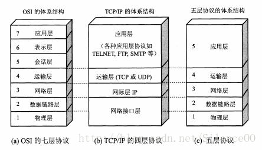
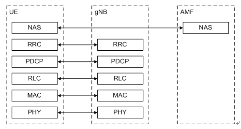
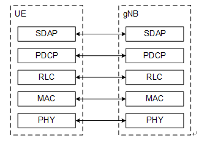
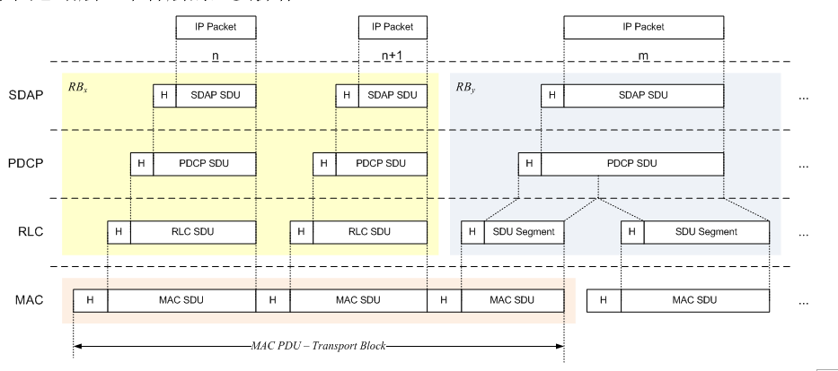
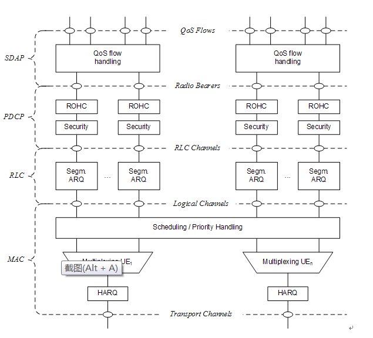

众所周知，在计算机网络中，OSI协议体系将网络分为七层。实际应用中，根据关注点的不同，又演变出不同的协议栈体系，不过协议的本质没区别。

在有线网络中，数据链路层是以太网(Ethern)。在无线通信中，数据链路层是 LTE/NR 网络。
5G NR协议栈
NR无线协议栈分为两个平面：用户面和控制面。用户面(User Plane, UP）协议栈即用户数据传输采用的协议簇，控制面(Control Plane, CP)协议栈即系统的控制信令传输采用的协议簇。NR用户面和控制面协议栈稍有不同。
控制面
NR控制面协议几乎与LTE协议栈一模一样，从上到下依次为：
- NAS层：Non-Access Stratum
- RRC层：Radio Resource Control
- PDCP层：Packet Data Convergence Protocol
- RLC层：Radio Link Con trol
- MAC层：Medium Access Control
- PHY层：Physical

用户面
NR用户平面相比LTE协议栈多了一层SDAP层，用户面协议从上到下依次是：
- SDAP层：Service Data Adaptation Protocol
- PDCP层：Packet Data Convergence Protocol
- RLC层：Radio Link Control
- MAC层：Medium Access Control
- PHY层：Physical

UE所有的协议栈都位于UE内；而在网络侧，NAS层不位于基站gNB上，而是在核心网的AMF （Access and Mobility Management Function）实体上。还有一点需要强调的是，控制面协议栈不包含SDAP层。
NR 层2功能介绍
OSI协议体系中的数据链路层对应 NR 的层2，包含SDAP、PDCP、RLC和MAC层。整体结构如下：

其中每层具体工作是如下：

MAC子层
MAC 层服务和功能的包括：
- 逻辑信道与传输信道之间的映射
- 复用、解复用。将来自一个或多个逻辑信道的MAC SDU复用到一个传输块并传递给PHY；将从物理层传来的传输块解复用成多个MAC SDU并传递给逻辑信道
- 报告调度信息
- 通过HARQ进行错误纠正（在载波聚合中，每个载波对应一个HARQ实体）
- 通过动态调度管理用户间的优先级
- 逻辑信道优先级管理
- 填充
根据传输信息的类型来区分。MAC子层分为不同的逻辑信道。逻辑信道主要分为两类：控制信道和业务信道。
控制信道用于传输控制平面的信息，包括：
- BroadcastControl Channel (BCCH)：用于广播系统控制信息的下行信道
- BroadcastControl Channel (BCCH)：用于转发寻呼消息和系统信息变更的下行信道
- CommonControl Channel (CCCH)：当UE与网络没有建立RRC Connection时，UE与网络间传输控制信息的信道
- DedicatedControl Channel (DCCH)：当UE与网络已经建立RRC Connection时，UE与网络间传输控制信息的一对一信道
业务信道用于传输用户平面的信息，包含：
- DedicatedTraffic Channel (DTCH)：一对一信道，指向一个UE，传输UE的业务数据，在上下行中都存在。
逻辑信道同物理信道有着映射关系：
| 下行 | 上行 |
|---|---|
| BCCH–> BCH | |
| BCCH–> DL-SCH | |
| PCCH–> PCH | |
| CCCH–> DL-SCH | CCCH–> UL-SCH |
| DCCH–> DL-SCH | DTCH–> UL-SCH |
| DTCH–> DL-SCH | DCCH–> UL- SCH |
RLC子层
与LTE系统一样，NR RLC也包含三种传输模式：
- TransparentMode (TM)
- UnacknowledgedMode (UM)
- AcknowledgedMode (AM)
每个逻辑信道对应一种RLC配置，RLC配置和ARQ都不依赖于物理层子载波间隔、CP类型和TTI长度等。
- SRB0承载、寻呼和系统信息广播采用TM传输模式
- 其他SRB承载采用AM传输模式
- DRB承载可以采用AM或UM模式
RLC子层的服务和功能包括：
- 传输上层的PDU
- 编号（与PDCP层编码独立）（UM与AM模式）
- 通过ARQ纠错（AM模式）
- 对RLC SDU进行分割（UM与AM模式）和重分割（AM模式重传时）
- 重组RLC SDU（UM与AM模式）
- 重复检测（根据编号进行，AM模式）
- RLCSDU丢弃（UM与AM模式）
- RLC层重建
- 协议错误检测（AM模式）
PDCP子层
PDCP子层在用户面服务和功能包括：
- 编号
- 头压缩和解压缩（ROHC算法）
- 传输用户数据
- 重排序和重复检测
- PDCP PDU路由（当存在Bear Split时）
- PDCP SDU重传
- 加密、解密和完整性保护
- PDCP SDU丢弃
- PDCP重建、为RLC AM恢复数据
- PDCP PDU复制
PDCP子层在控制平面功能包括
- 编号
- 加密、解密和完整性保护
- 传输控制面数据
- 重排序和重复检测
- PDCP PDU复制
SDAP子层
每个PDU Session对应一个SDAP实体，和 IP 层的交互发生在这里，其功能包括：
- QoS流与无线承载之间的映射
- 在上下行数据包中标识QoS flow ID (QFI)